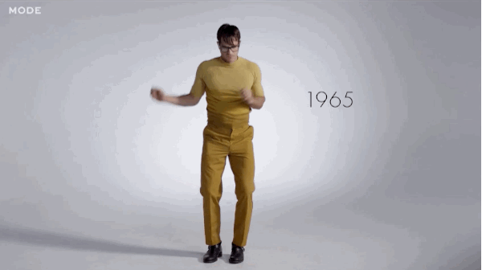
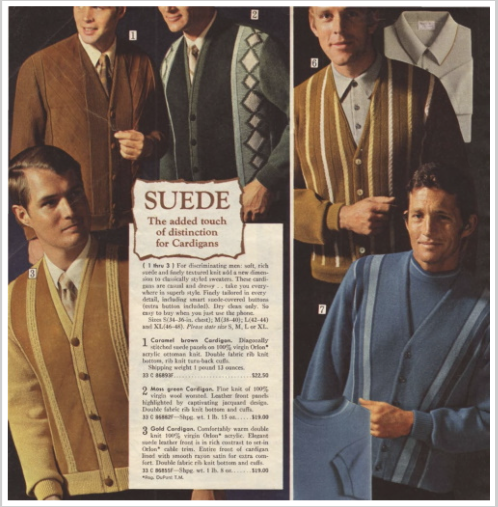
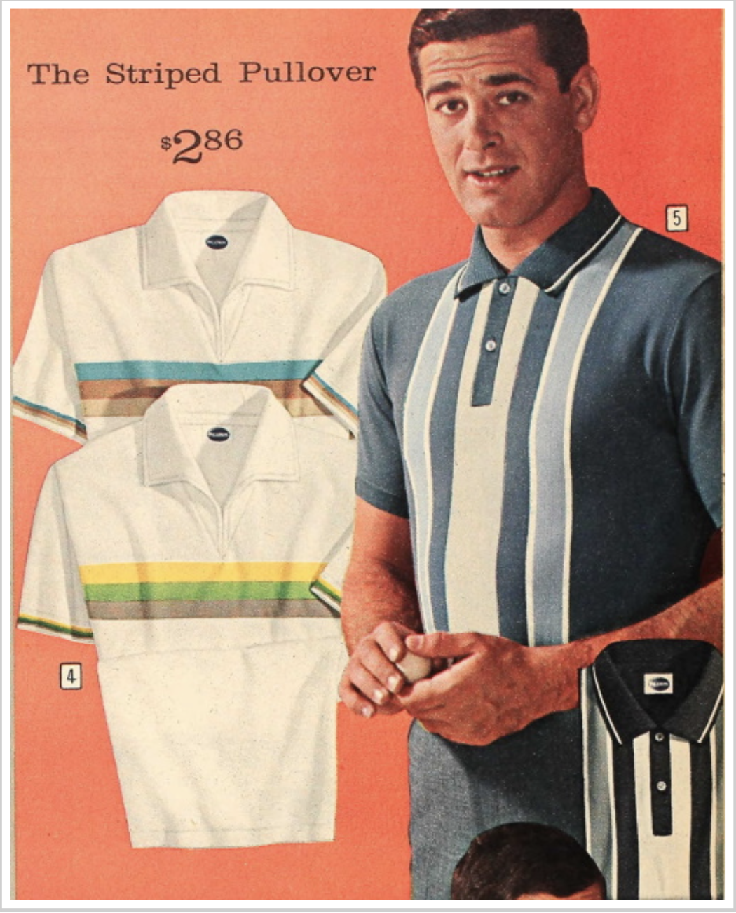
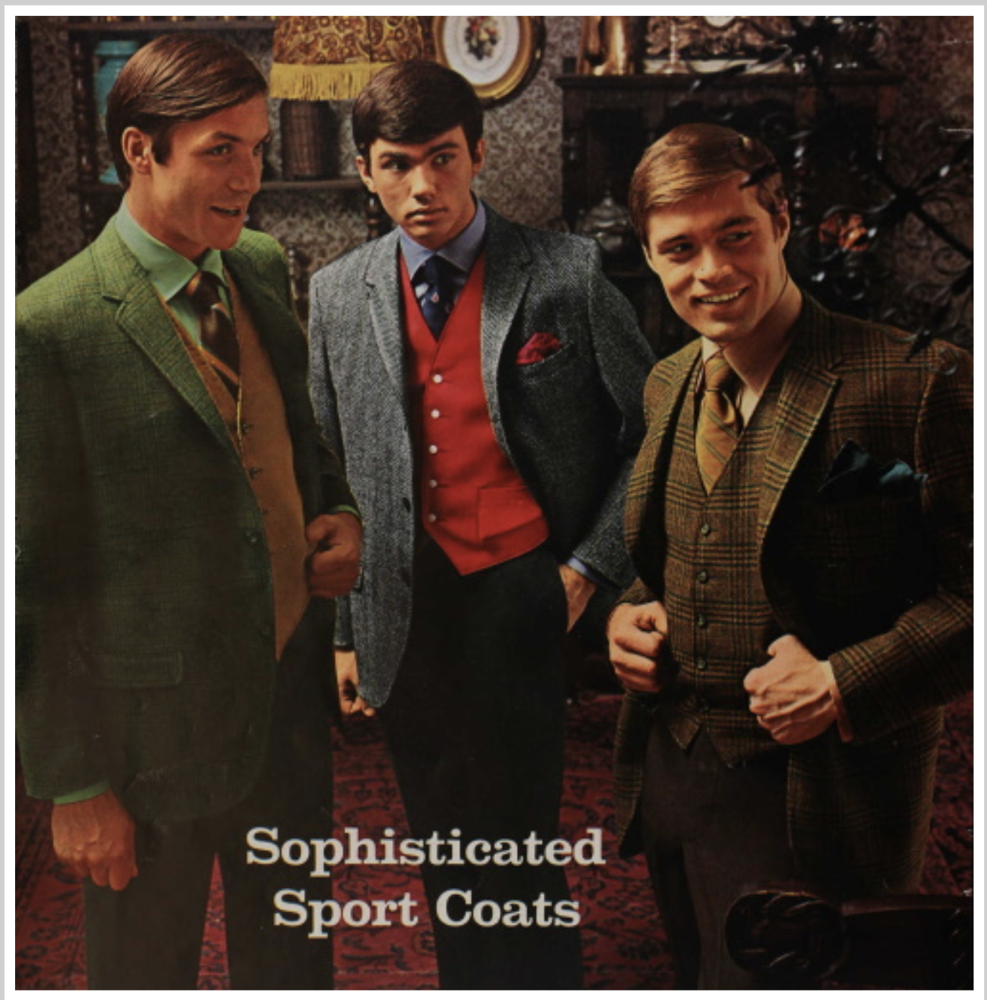

By 1965, half of the USA’s population was under 25 years of age. The young men and women of the ’60s had witnessed social injustices of their parent’s generation and wanted change. That change, reflected in 1960s men’s clothing, was a continuation of casualness, a slimming of the figure (boyish shapes), and brighter colors and patterns last seen in the late 1920s.
Men's sweaters in the 60s typically includes stripes and color-blocked patterns. The pullover sweater (jumper) and cardigan achieved a new status of high fashion when Italian knitwear makers Missoni and Gino Paelo introduced innovative designs and knitting techniques. Sweaters appeared with jeans at ski resorts or just around town for the average man who wore it as a replacement for a sport coat. Wide stripe blocking, geometric tile designs, chunky knits and new textures went mainstream quickly. There was a sweater revival, not only with new designs, but with the classic Tennis or letterman sweater, sweater vests, and V neck cardigans.
Polos, also called sweater-shirts, were often trimmed in contrasting stripes or made up in large two-tone color blocks, a carryover from the ’50s. Some feature printed designs reflecting the Atomic Age/Space Age. Many had zip-up collars instead of buttons. The horizontal striped polo shirt mimicked classic fisherman shirts while vertical panel shirts were borrowed from 50s bowling shirts. Besides the polo, the button-down shirt in plaid, stripes, or prints remained the essential men’s shirt for almost every occasion. Western shirts with piping trim were frequently seen in small-town America. Camp shirts, worn untucked, remained popular summer shirts.
Outside of the office or to a business casual lunch, men could wear the latest trend for sportcoats in bold patterns and contrasting colors. This look was heavily influenced by the Ivy League style who wore mismatched suit jackets and pants with a bold colored suit vest or sweater vest. Red and yellow were the most popular vest colors that popped under dark blue, grey, or tan sportcoats. Dark vests were worn with lighter colored jackets. Brightly colored dress shirts replaced vests in the mid to late 60s. Sport coat colors and patterns grew bolder as the decade progressed. Subtle and muted patterns in the early years gave way to wide boater stripes, large plaids, windowpane, and black and white checks or herringbone. Solid colors such as red, ivory, white, bright blue, light grey, and mustard yellow were equally paired with dark trousers in another solid color (or pattern in the later years). The final years also saw an explosion of pastels and pinstripes, a nod back to the mid-1920s. Baby pink, sky blue, sunshine yellow were spring and summer favorites.
